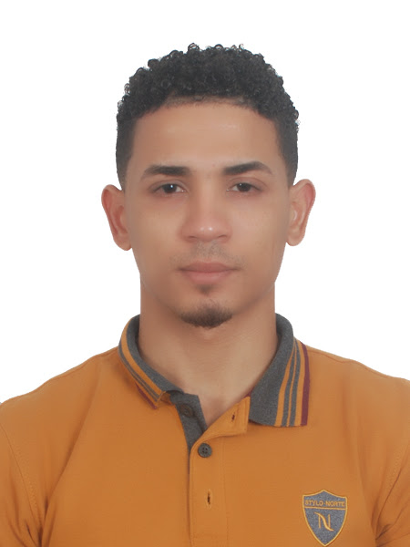
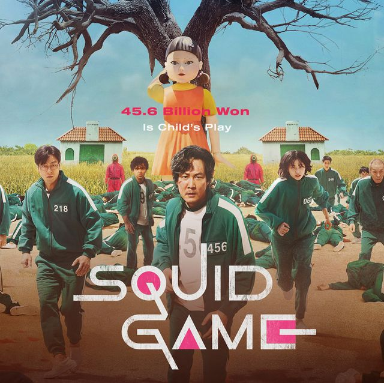
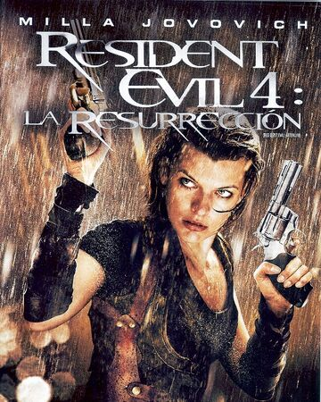

JOSE ANGEL DURAN
Calle la Progreso, Casa #95/Los Guaricanos TEL: 829-355-4265
Email: Jose-angel1941@hotmail.com
DATOS GENERALES
LUGAR DE NACIMIENTO: Santo Domingo ESTE, R.D.
FECHA DE NACIMIENTO: 26/08/1993
CEDULA: 225-0087016-48
NACIONALIDAD: Dominicano
ESTADO CIVIL: Soltero
OCUPACION: Estudiante
FORMACION ACADEMICA
ESTUDIOS PRIMARIOS: Colegio de los Santos (2005 - 2007)
ESTUDIOS SECUNDARIOS: Escuela Francisco Peña Gomez (2007 - 2009)
BACHILLER: Colegio Montesqui (2010-2014)
ESTUDIOS UNIVERSITARIOS: Universidad Tecnologica de Santiago (UTESA)
EXPERIENCIA LABORAL
ENSAMBLADOR: ENCORE DRE Services Repairt (2016-2017)
TECNICO SLOTS: Casino Mirage (2018-2019)
SOPORTE TECNICO: Consocio de Banca Ramon Alvarez (2020-2021)
OTROS
IDIOMA: Ingles/basico
PASATIEMPO: Estudiar/Trabajar/Gym/Programar
MIS 3 PELICULAS FAVORITAS


MI VIDEO DEL FUTURO